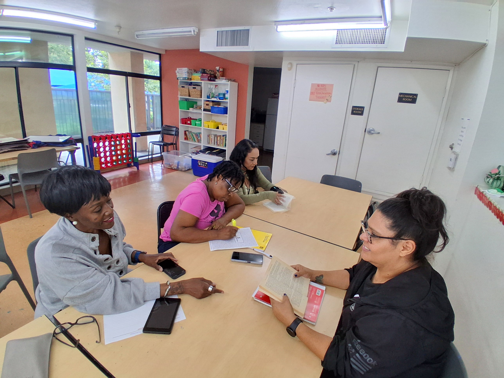
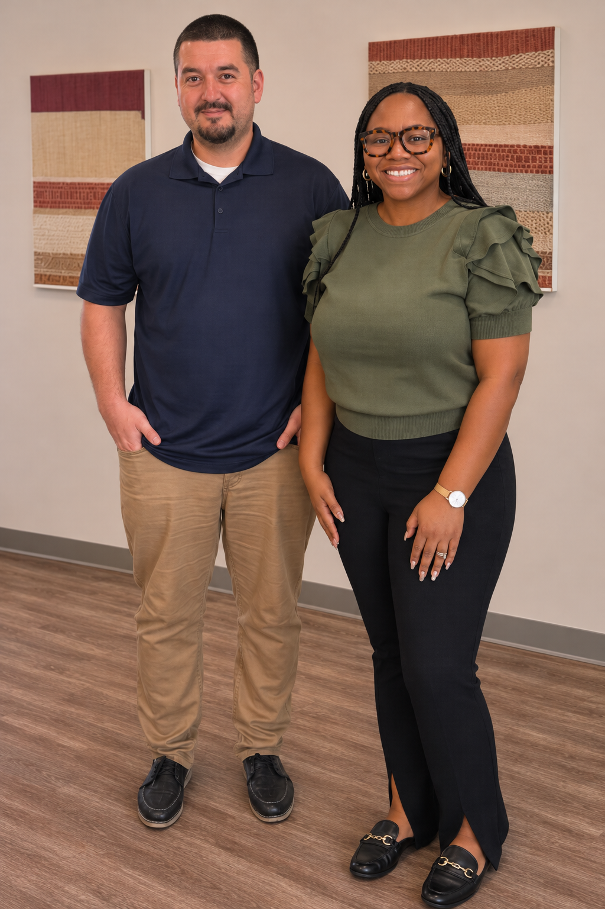

Professional Development Services That Support Stable and Fulfilling Lives

Professional development services help tenants move beyond housing stability toward employment, education, and community engagement through structured programs, personal development, life skills training, and skill-building opportunities.
Professional Development Produces Meaningful Outcomes
Tenants build confidence, self-worth, and self-efficacy through life skills training that supports long-term stability and independence.
Individuals pursue diverse pathways, including employment readiness, education, volunteering, and community involvement.
Participation leads to measurable changes in knowledge, beliefs, and job preparation for future opportunities.
Sustained support within supportive housing programs produces both personal transformation and tangible progress toward stability.
Sustaining Supportive Housing Programs and Partnerships
The program is delivered through coordinated supportive housing programs and partnerships that support consistent implementation and expand access to employment readiness opportunities across aligned organizations.
Internal Program Structure and Facilitation
Structured schedules and sessions guide participants through a defined progression.
Facilitators assess needs, provide feedback, and support ongoing engagement in life skills training activities.
Clear expectations support accountability and consistent participation.

External Partnerships and Resource Integration
The program collaborates with employment centers, educational institutions, and service agencies.
Partnerships provide job preparation resources, training, referrals, and access to additional opportunities.
Integrated resources extend support beyond the program and enable coordination across services.
Professional Development Builds Employment Readiness and Workforce Skills
The program provides structured activities through which participants develop skills and knowledge that support employment readiness and engagement in related opportunities.
Employment and Workplace Skill Development
Participants develop job search strategies, resumes, interview skills, and job preparation competencies.
Activities build communication, teamwork, workplace behavior, and life skills training competencies.
Learning occurs through individual work, collaboration, and applied practice.
Knowledge of Benefits That Supports Employment Participation
Participants learn how employment affects Social Security benefits and related programs.
Instruction covers both general concepts and detailed program information connected to employment readiness.
Increased understanding reduces uncertainty and supports informed decisions about pursuing opportunities.